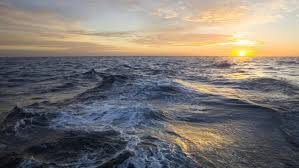

Атлантический океан
Атлантический океан
Атланти́ческий океа́н — второй по величине и глубине океан Земли после Тихого океана, расположенный между Гренландией и Исландией на севере, Европой и Африкой на востоке, Северной и Южной Америкой на западе и Антарктидой на юге.
Площадь 91,66 млн км², из которых около 16 % приходится на моря, заливы и проливы. Площадь прибрежных морей невелика и не превышает 1 % от общей площади акватории. Объём вод составляет 329,66 млн км³, что равно 25 % объёма Мирового океана. Средняя глубина — 3736 м, наибольшая — 8742 м (жёлоб Пуэрто-Рико). Среднегодовая солёность вод океана составляет около 35 ‰. Атлантический океан имеет сильно изрезанную береговую линию с выраженным делением на региональные акватории: моря и заливы.
Название произошло от имени титана Атласа (Атланта) в греческой мифологии